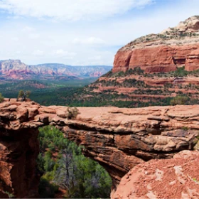

Фото и видео
Не можете решиться на путешествие
из-за курса?
Фотографии помогут вам
забыть о политике и экономике.
Список фото

Неродные просторы
1350

Местная растительность
143

Дорога на север
96
 Мост дьявола
254
Все еще сомневаетесь?
Смотрите видеопрезентацию и скорее за билетами, пока они не подорожали в очередной раз!